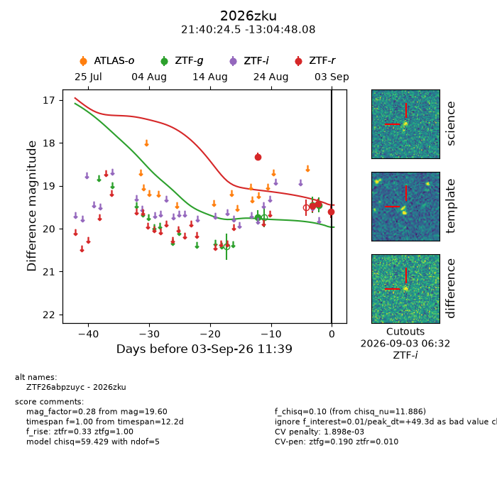
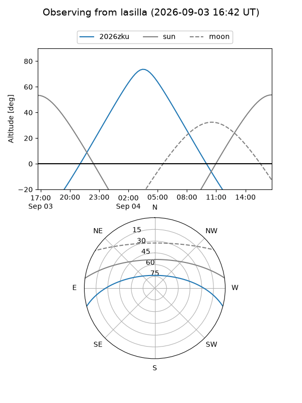
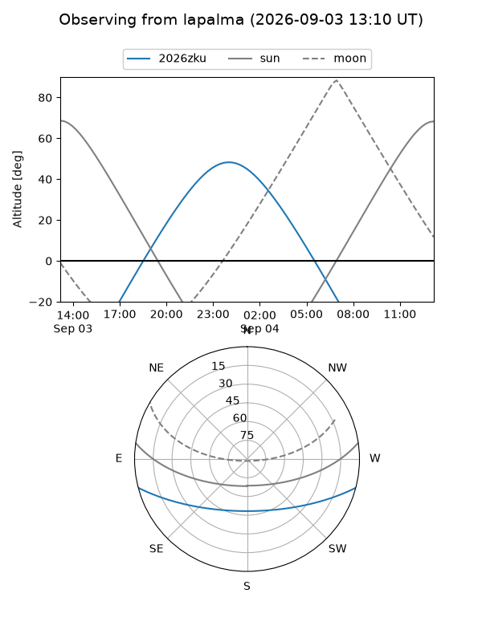
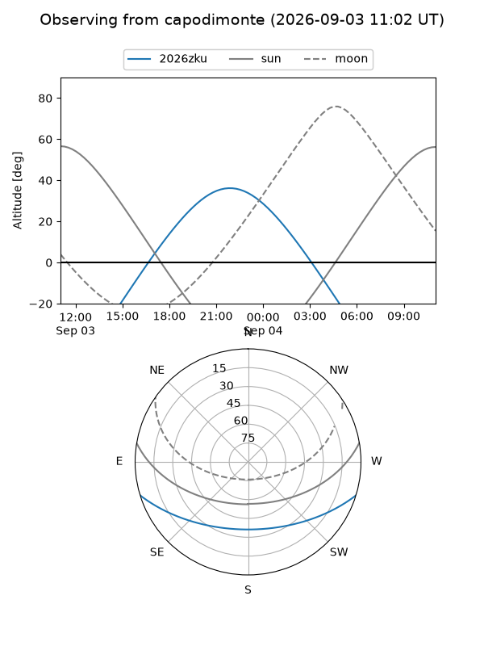
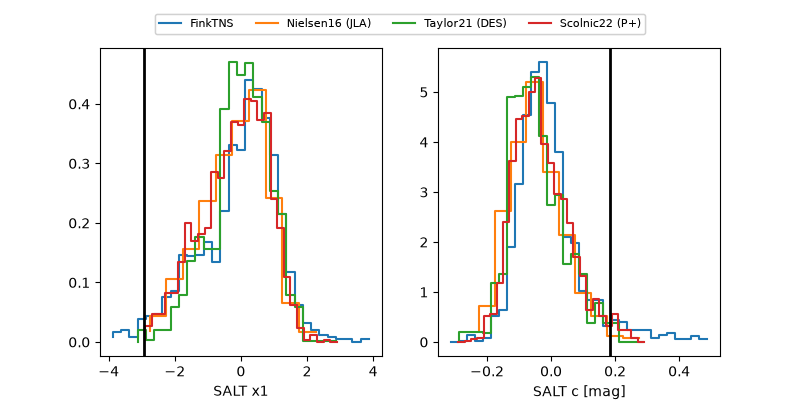

2026zku
Target 2026zku at 2026-09-03 11:40
Aliases and brokers:
FINK-ZTF: ztf.fink-portal.org/ZTF26abpzuyc
Lasair-ZTF: lasair-ztf.lsst.ac.uk/objects/ZTF26abpzuyc
ALeRCE-ZTF: alerce.online/object/ZTF26abpzuyc
YSE-PZ: ziggy.ucolick.org/yse/transient_detail/2026zku
TNS name: wis-tns.org/object/2026zku
Direct TNS query: direct search
alt names
ZTF26abpzuyc (ztf,fink_ztf)
2026zku (tns,yse)
Coordinates:
equatorial (ra, dec) = 325.1022,-13.08002
equatorial (HMS+DMS) = 21:40:24.52,-13:04:48.08
galactic (l, b) = (40.6071,-43.31318)
Flags:
TNS type: nan
peak dt: +49.3
likely cv: !!
Photometry:
last ztfg=19.45, ztfr=19.60
2 ztfg, 4 ztfr detections
Lightcurve

Visibility



Additional plots
